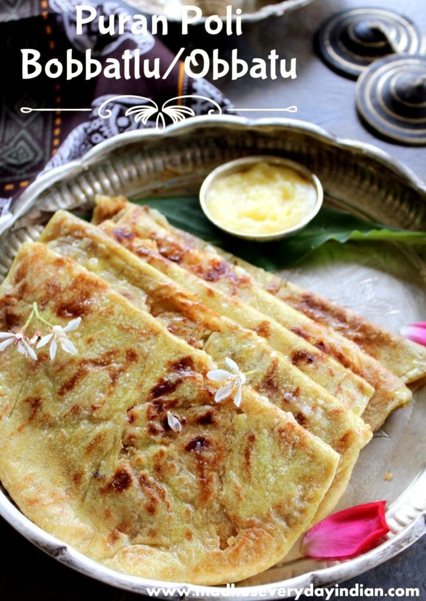

Heat ghee or oil in a pan. Add mustard seeds and let them splutter.
Add curry leaves and sauté for a few seconds.
Add turmeric powder and red chili powder, and fry for a few seconds.
Add tamarind pulp and salt to taste. Simmer until the tamarind pulp thickens slightly.
Add cooked rice and mix well. Cook for a few minutes until the flavors are well combined.
Garnish with roasted peanuts and serve hot.
Andhra Biryani
Andhra Biryani Recipe (English):
Ingredients:
2 cups basmati rice
500g chicken, cut into pieces
1 cup yogurt
2 large onions, thinly sliced
2 tomatoes, chopped
2 tablespoons biryani masala
1 teaspoon turmeric powder
1 teaspoon red chili powder
1/4 cup chopped coriander leaves
1/4 cup chopped mint leaves
Salt to taste
Ghee or vegetable oil
Instructions:
Marinate chicken with yogurt, turmeric powder, red chili powder, and biryani masala. Set aside for at least 30 minutes.
Heat ghee or oil in a large pot. Fry onions until golden brown.
Add marinated chicken and cook until it starts to brown.
Add tomatoes and cook until they soften.
Layer the partially cooked rice over the chicken. Sprinkle with coriander and mint leaves.
Cover and cook on low heat for 20-30 minutes until the rice and chicken are fully cooked.
Serve hot with raita or a side salad.
Bobbatlu

Bobbatlu Recipe (English):
Ingredients:
1 cup chana dal (split chickpeas)
1 cup jaggery, grated
1 teaspoon cardamom powder
2 cups all-purpose flour (maida)
Pinch of salt
Ghee for frying
Instructions:
Cook chana dal until soft and mash it well.
Add grated jaggery and cook on low heat until it melts and combines with the dal. Add cardamom powder and mix well. Let it cool.
Mix all-purpose flour with a pinch of salt and water to make a soft dough. Cover and let it rest for 30 minutes.
Divide the dough into small balls and flatten them. Place a spoonful of the dal-jaggery mixture in the center and fold the dough over it, sealing the edges.
Roll out each filled dough ball into a flat disc. Fry on a hot griddle with ghee until golden brown on both sides.